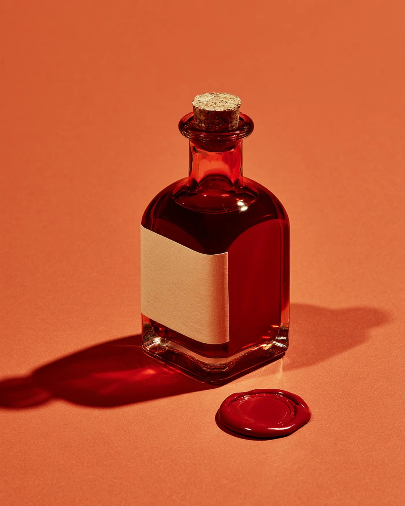

Ink that remembers where it came from.
Six natural inks, made in small batches from seeds, beetles, leaves and walnut husks. Each bottle says where its colour grew.
AchioteCochinillaGualda
AñilNogalHoja

Achiote, batch 14Annatto seed from Yucatán, steeped for four days. 50 ml.